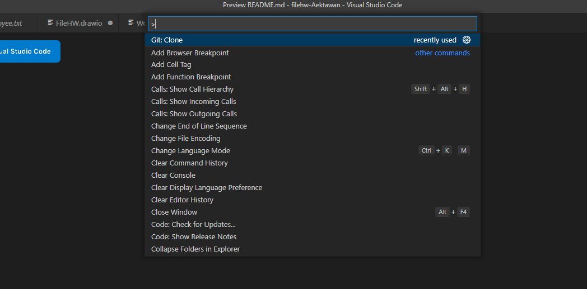

INTRODUCTION

Python
Python is a high-level, general-purpose programming language. Its design philosophy emphasizes code readability with the use of significant indentation.
Python is dynamically-typed and garbage-collected. It supports multiple programming paradigms, including structured (particularly procedural), object-oriented and functional programming. It is often described as a "batteries included" language due to its comprehensive standard library.
Guido van Rossum began working on Python in the late 1980s as a successor to the ABC programming language and first released it in 1991 as Python 0.9.0. Python 2.0 was released in 2000 and introduced new features such as list comprehensions, cycle-detecting garbage collection, reference counting, and Unicode support. Python 3.0, released in 2008, was a major revision that is not completely backward-compatible with earlier versions. Python 2 was discontinued with version 2.7.18 in 2020.
Python consistently ranks as one of the most popular programming languages.
Why Python
1. Scripting language
Because Python is a scripting language This makes it less time consuming to write and compile. This makes it especially suitable for system administration tasks. Python is supported as part of UNIX, Linux and can be installed to run as a Windows scripting language through the Windows Script Host system.
2. Easy to read
Python syntax eliminates the use of symbols used to divide program blocks. and use indentation instead. This makes it easy to read programs written. There is also support for writing docstrings, which are short texts that describe functions, classes, and modules.
3. Glue language
Python is a very good glue language because it can run many other programming languages, making it ideal for coordinating programs written in different languages.
VISUAL STUDIO CODE

Visual Studio Code, also commonly referred to as VS Code, is a source-code editor made by Microsoft with the Electron Framework, for Windows, Linux and macOS. Features include support for debugging, syntax highlighting, intelligent code completion, snippets, code refactoring, and embedded Git. Users can change the theme, keyboard shortcuts, preferences, and install extensions that add additional functionality.
HISTORY
Visual Studio Code was first announced on April 29, 2015, by Microsoft at the 2015 Build conference. A preview build was released shortly thereafter.
On November 18, 2015, the source of Visual Studio Code was released under the MIT License, and made available on GitHub. Extension support was also announced. On April 14, 2016, Visual Studio Code graduated from the public preview stage and was released to the Web. Microsoft has released most of Visual Studio Code's source code on GitHub under the permissive MIT License, while the releases by Microsoft are proprietary freeware.
INSTALl VISUAL STUDIO CODE
Visual Studio Code Install
1. Select Operating System
GITHUB

GitHub is an Internet hosting service for software development and version control using Git. It provides the distributed version control of Git plus access control, bug tracking, software feature requests, task management, continuous integration, and wikis for every project.[5] Headquartered in California, it has been a subsidiary of Microsoft since 2018.[6]
It is commonly used to host open source software development projects. As of June 2022, GitHub reported having over 83 million developers and more than 200 million repositories, including at least 28 million public repositories. It is the largest source code host as of November 2021.
HISTORY
Development of the GitHub.com platform began on October 19, 2007. The site was launched in April 2008 by Tom Preston-Werner, Chris Wanstrath, P. J. Hyett and Scott Chacon after it had been made available for a few months prior as a beta release. GitHub has an annual keynote called GitHub Universe.
WHY GITHUB
You Can
- Create and use a repository
- Start and manage a new branch
- Make changes to a file and push them to GitHub as commits
- Open and merge a pull request
GITHUB
Sign in & Sign up GitHub
1. Select Sign in & Sign up
If you don't have an account, select Sign up. Then complete the information.
If you have an account, and want to clone your repositories on vs code
- 1. Choose your repositories on github
- 2. Copy your HTTPS
- 3. C + SHIFT + P on Visual Studio Code, Select Git: Clone

- 4. Paste your HTTPS from Github
- 5. Choose where to put a folder
Python Print String
Basic Print String Python will use code *** print ('message') or print ("message") ***